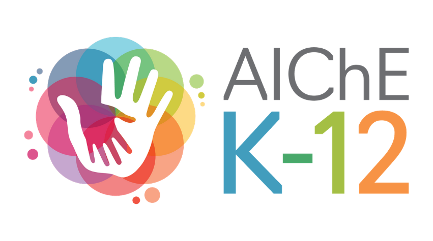

WebDev Experience
Website pertama yang saya buat merupakan sebuah website film yang
dapat menampilkan data-data dari sebuah film. Website ini saya
buat pada saat masa perkuliahan semester 1 sebagai tugas dari
suatu organisasi. Sebelum ini, pengalaman web development saya
hanya terbatas pada HTML dan CSS yang pertama kali saya pelajari
pada kelas 11 SMA. Karena saya ingin menambahkan interaktivitas
pada website ini, akhirnya saya mempelajari JavaScript selama
kurang lebih 2 minggu dan berhasil membuat fitur carousel untuk
menampilkan list film serta berhasil menyambungkan website pada
api yang berisi database film.
(github repo)
Setelah membuat website pertama, saya mulai mempelajari backend
development menggunakan NodeJS. Selain itu, saya juga mempelajari
framework backend dan database seperti Express, MongoDB, dan
MySQL. Salah satu project backend yang pernah saya buat adalah
membuat server backend untuk tugas Milestone SPARTA. Kelompok saya
memilih untuk membuat web-app yang dapat menyimpan data makanan
dan dapat menunjukkan makanan yang sudah mendekati expiry date.
Dalam project ini, diimplementasikan proses CRUD untuk data user
dan data makanan ke dalam database MongoDB menggunakan Mongoose
dan Express.
(github repo)
Untuk frontend development, sekarang ini saya sedang mendalami framework React dan Svelte. Salah satu project yang sedang saya kerjakan bersama teman-teman saya adalah website homepage untuk AIChE ITB. Dalam project ini, saya mengerjakan bagian frontend menggunakan framework Svelte dan Tailwind CSS. Website ini sendiri memiliki fitur yang cukup lengkap seperti halaman landing-page, contact-us, about-us, dan lain-lain. Dalam project ini saya belajar untuk berkolaborasi dan bekerja bersama sebagai sebuah tim, mulai dari proses perancangan website, desain, hingga proses developmentnya.
Kedepannya saya akan mengejarkan project website untuk event K-12 AIChE. Dalam event ini, saya berperan sebagai ketua divisi IT dengan jobdesc membuat rancangan awal website, mengontrol tim beranggotakan 5 orang, dan memastikan keberlangsungan project. Saat ini, website masih dalam tahap perencanaan awal dan fitur-fitur yang akan diimplementasikan antara lain proses registrasi user untuk acara dan perlombaan, proses pembayaran otomatis untuk pendaftaran, dan platform untuk perlombaan yang akan diselenggarakan.
